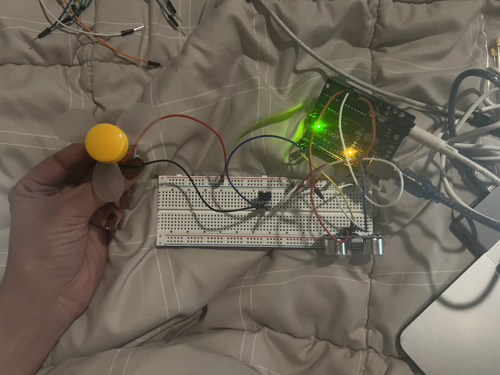
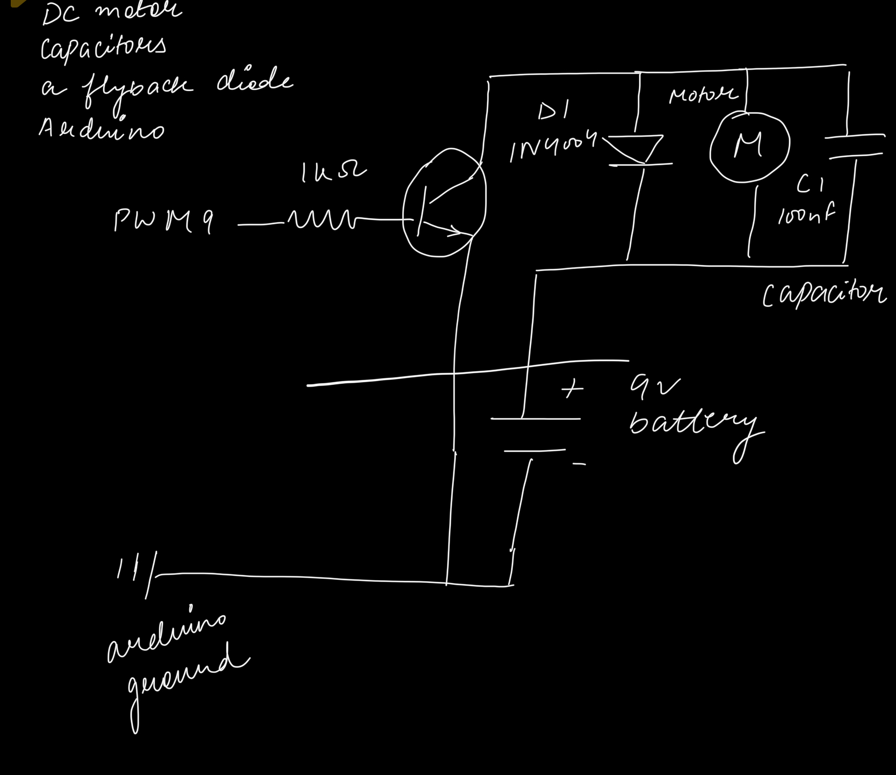
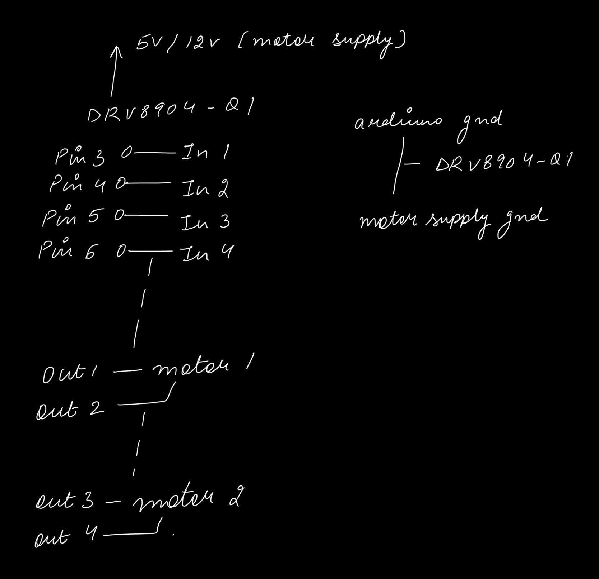

Arduino code:
const int trigPin = 3;
const int echoPin = 2;
const int fanPin = 5; // PWM pin to MOSFET gate
const float threshold = 50; // cm
void setup() {
pinMode(trigPin, OUTPUT);
pinMode(echoPin, INPUT);
pinMode(fanPin, OUTPUT);
Serial.begin(9600);
}
void loop() {
// Trigger the ultrasonic sensor
digitalWrite(trigPin, LOW);
delayMicroseconds(2);
digitalWrite(trigPin, HIGH);
delayMicroseconds(10);
digitalWrite(trigPin, LOW);
// Read echo pulse
long duration = pulseIn(echoPin, HIGH, 30000); // 30ms timeout
// Check if echo was detected
if (duration == 0) {
Serial.println("No echo detected");
analogWrite(fanPin, 0); // Turn fan OFF
} else {
float distance = duration * 0.017;
Serial.print("Distance (cm): ");
Serial.println(distance);
// Turn fan ON if object within threshold
if (distance <= threshold) {
analogWrite(fanPin, 255); // Full speed
} else {
analogWrite(fanPin, 0); // Turn fan OFF
}
}
delay(200);
}
Questions & Answers
1. What is the absolute maximum amount of current between pins 2 and 3?
Based on the datasheet for the DMT6009LCT MOSFET, it can safely handle a continuous drain current of 33.9 A at a gate voltage of 4.5 V, which is far higher than the typical current drawn by a small 12 V desk fan, usually around 0.5–1 A. This means the MOSFET can easily switch the fan on and off without risk of overheating or damage. Additionally, its low on-resistance of approximately 14.5 mΩ results in a negligible voltage drop across the MOSFET when the fan is operating, ensuring the fan receives nearly the full 12 V. Since the Arduino pin only drives the MOSFET gate with a very small current, the circuit is safe and well within the component limits, making the MOSFET an appropriate choice for controlling the fan in this setup.
2. Draw a schematic for a circuit with using at least your arduino, a DC motor, a flyback diode, and capacitors between power and ground. Find parts with datasheets you could use for each of these schematic components. 
3. Draw a schematic using at least your arduino, this chip, and two motors. Write (pseudo) code that shows how you would move the motors both forward, both back, then one forward one back, and one back then forward.

4. Did you use AI tools in completing this assignment? If yes, please provide details on how/when, as well as a brief reflection. If you used an LLM, please 'share' your conversation and include it as part of your submission, or cite the prompt(s) you used and the output. If no, you can either leave this question blank, or provide other information if you'd like.
/ motor control pins
Motor1_IN1 = Arduino pin 3
Motor1_IN2 = Arduino pin 4
Motor2_IN1 = Arduino pin 5
Motor2_IN2 = Arduino pin 6
// Setup
Set all motor pins as OUTPUT
// Main loop
// 1. Both motors forward
Set Motor1_IN1 HIGH
Set Motor1_IN2 LOW
Set Motor2_IN1 HIGH
Set Motor2_IN2 LOW
Wait 1 second
// 2. Both motors backward
Set Motor1_IN1 LOW
Set Motor1_IN2 HIGH
Set Motor2_IN1 LOW
Set Motor2_IN2 HIGH
Wait 1 second
// 3. Motor1 forward, Motor2 backward
Set Motor1_IN1 HIGH
Set Motor1_IN2 LOW
Set Motor2_IN1 LOW
Set Motor2_IN2 HIGH
Wait 1 second
// 4. Motor1 backward, Motor2 forward
Set Motor1_IN1 LOW
Set Motor1_IN2 HIGH
Set Motor2_IN1 HIGH
Set Motor2_IN2 LOW
Wait 1 second